Система расчета премий работников
Использованные технологии
| Backend |
Frontend |
Maven
Spring Boot 2
Spring MVC
Spring Data JPA (Hibernate)
Spring Security
REST (Jackson)
JSON Web Token
JUnit 5
|
|
Описание приложения
Данное приложение применяется для калькуляции размеров ежемесячных премий работников отделов предприятия.
В приложении используется четыре вида пользовательских ролей: экономисты, начальники отделов, кадровики и администраторы. Каждой роли присущи свои выполняемые задачи.
Основной задачей экономистов является менеджмент платежных периодов и ежемесячных премий отделов.
Экономисты могут создавать, обновлять и удалять информацию о платежных периодах, которые характеризуются календарным месяцем и количеством
часов, которое необходимо отработать работникам предприятия в данном месяце.
Каждый месяц экономисты вносят в приложение данные касательно ежемесячного премирования отделов.
Эти данные затем используются начальниками соответствующих отделов для распределения премии, выделенной отделу, между работниками данного отдела.
Экономисты при необходимости могут обновлять и удалять эти данные. Однако, если начальник отдела уже распределил выделенную на его отдел премию, экономист не может изменить
данные о премии отдела таким образом, что выделенная сумма будет меньше распределенной.
При удалении данных о ежемесячной премии отдела также удаляются данные о соответствующих премиях, распределенных между работниками отдела.

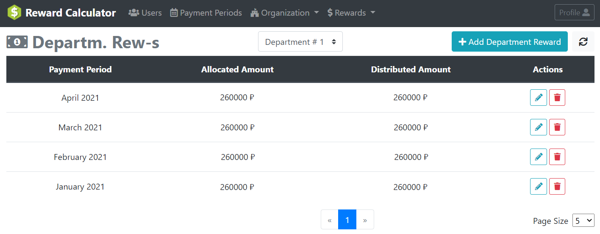
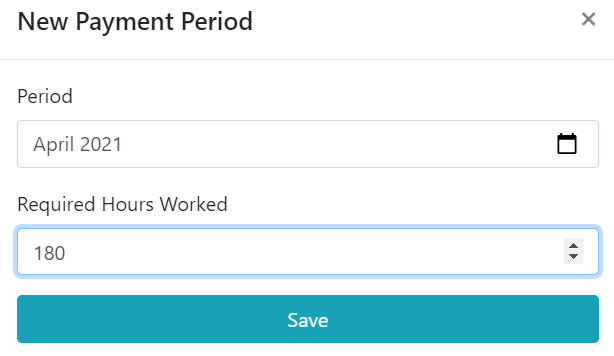
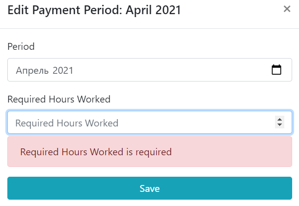
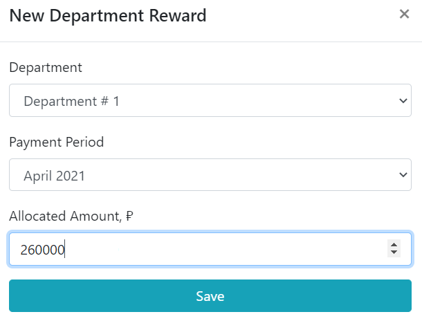

В производственных целях экономисты также имеют доступ (только для чтения) к данным, касающимся информации об отделах, должностях и работниках предприятия.
Начальники отделов выполняют задачи по распределению ежемесячных премий, выделяемых на их отдел между работниками отдела.
Премия работника складывается из следующих частей: премия за отработанное время (рассчитывается автоматически на основе оклада работника и
количества часов, отработанных им за текущий месяц), надбавка и штраф. Размеры надбавки и штрафа устанавливаются начальником отдела на основании производительности работника,
его заслуг в работе.
При распределении ежемесячной премии между работниками не допускается превышать сумму выделенной на отдел премии.
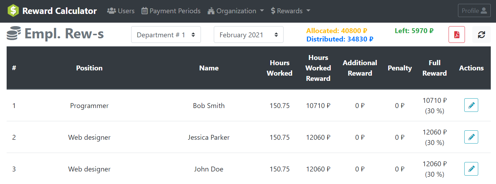
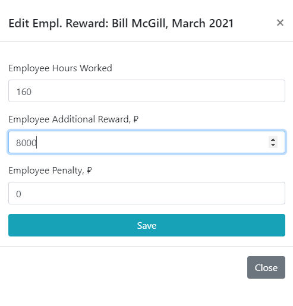
Закончив распределение премии между работниками, начальник отдела может скачать PDF файл, содержащий список работников для начисления премии в виде соответствующим
образом оформленной таблицы.
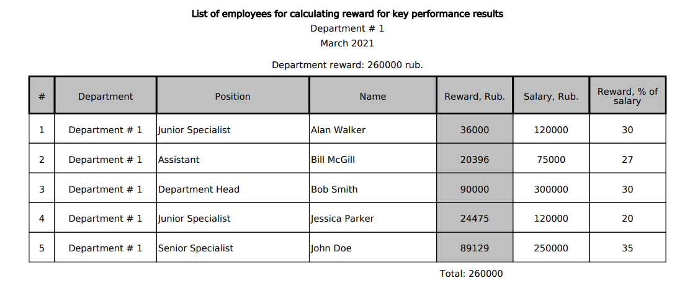
Помимо права распределения премии отдела между работниками начальники отделов имеют возможность просматривать информацию об отделах, должностях и работниках, но только тех отделов,
которые относятся к их юрисдикции. Начальники отделов не имеют прав изменять, либо удалять данную информацию.
В производственных целях начальники отделов также имеют доступ (только для чтения) к информации о платежных периодах на предприятии.
Кадровики выполняют задачи, связанные с кадровой деятельностью на предприятии.
Им доступна возможность просматривать информацию обо всех отделах предприятия, вносить в приложение данные о новых отделах, а также при необходимости изменять
и удалять информацию об уже имеющихся.
Кадровики имеют доступ к информации обо всех должностях и работниках всех имеющихся отделов, имеют возможность создавать данные о новых должностях и работниках,
а также изменять и удалять информацию об уже имеющихся должностях и работниках.
В производственных целях кадровики также имеют доступ (только для чтения) к информации о платежных периодах на предприятии.
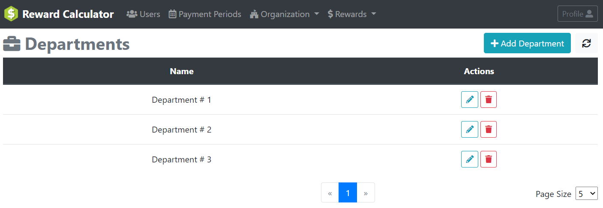
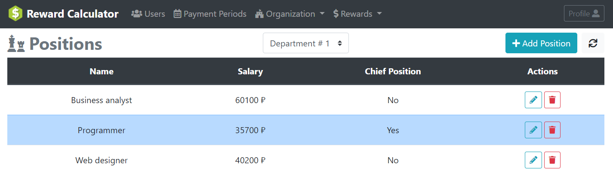
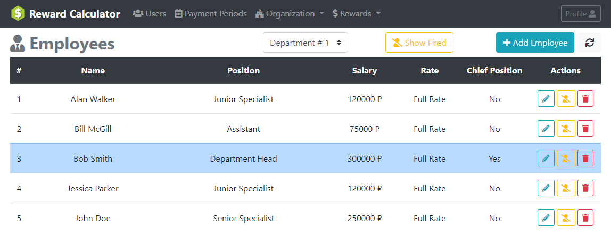
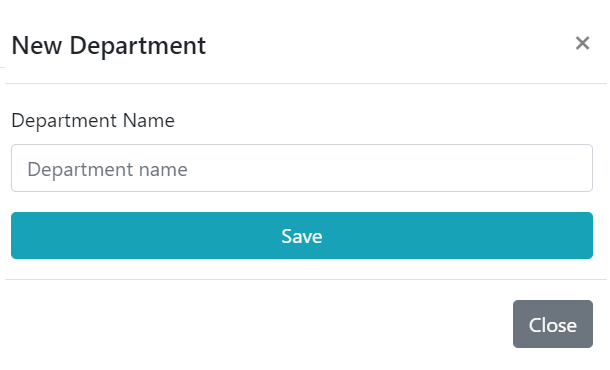
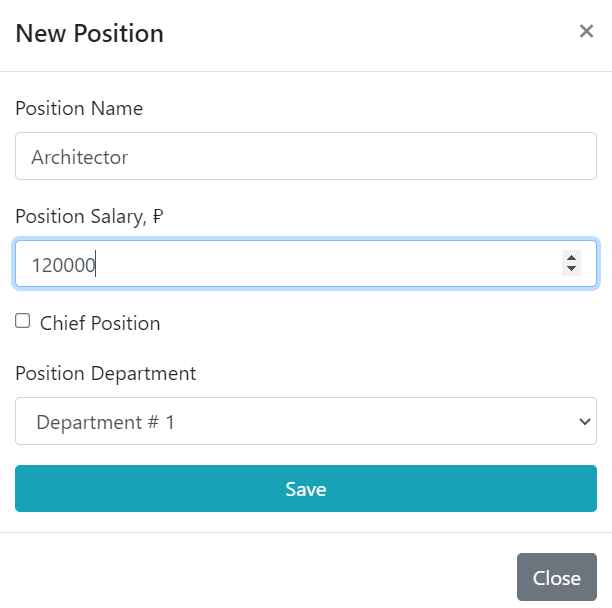
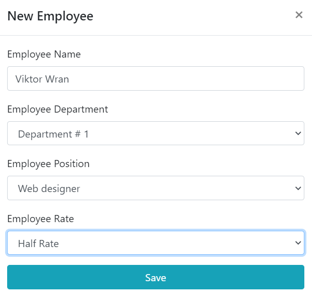
Администраторам доступны любые действия, которые можно выполнить в приложении, включая вышеописанные действия, доступные экономистам, начальникам отделов
и кадровикам.
Но основной задачей администраторов является менеджмент пользователей приложения.
Администраторы имеют возможность просматривать информацию о пользователях приложения с опцией поиска по имени/адресу электронной почты. Они имеют право создавать новых
пользователей, назначая им соответствующие права доступа, редактировать информацию об уже имеющихся пользователях, удалять, а также блокировать их учетные записи.
В случае, если пользователь забыл свой пароль, у администратора есть возможность сменить пароль пользователя на новый.

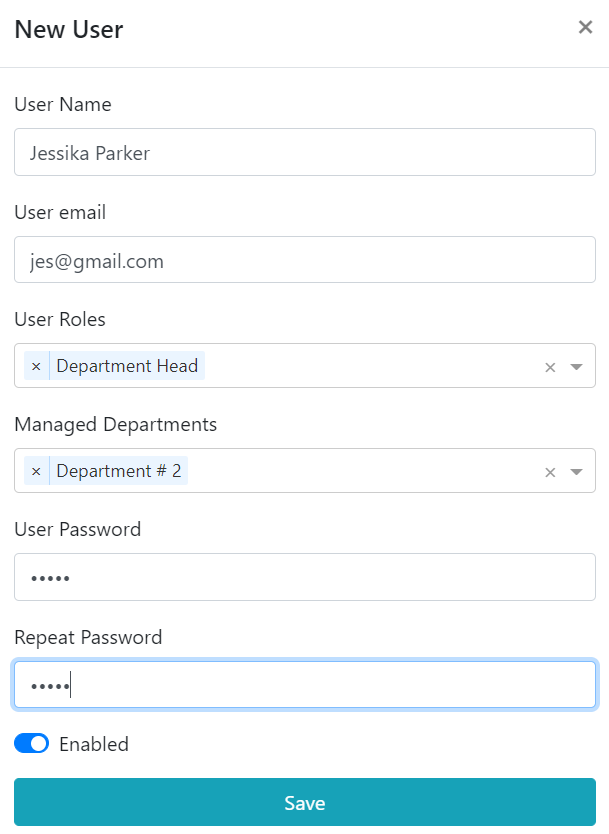
Любому авторизованному пользователю приложения доступна возможность просмотреть свой профиль, а также сменить текущий пароль.